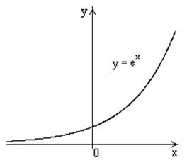

П 19ТУ№11.
У графика  существует
левая горизонтальная асимптота
существует
левая горизонтальная асимптота  () и не существует правой
горизонтальной асимптоты.
() и не существует правой
горизонтальной асимптоты.
существует
левая горизонтальная асимптота () и не существует правой
горизонтальной асимптоты.
существует
левая горизонтальная асимптота () и не существует правой
горизонтальной асимптоты.